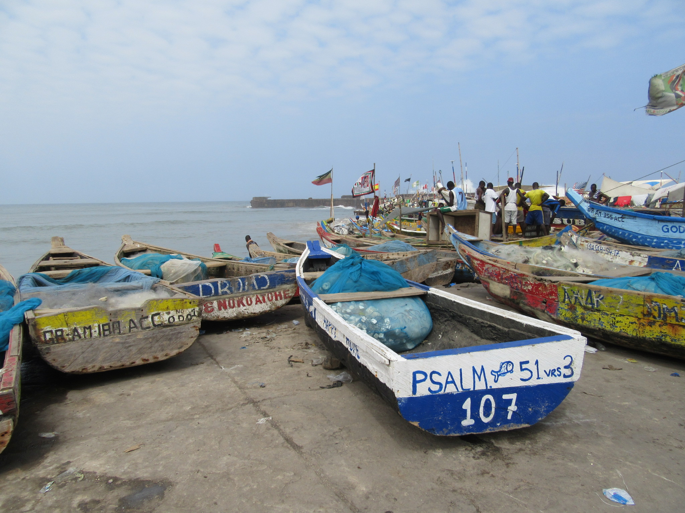

I am a geographer and political ecologist as well as an artist, Croatian-American, and Los Angeles native.
As a researcher, I am interested in developing a deeper understanding of the exposure to harm that vulnerable communities unequally face as a result of resource extraction and land grabs. Understanding precarity is foundational to contributing to this knowledge.
Curriculum Vitae